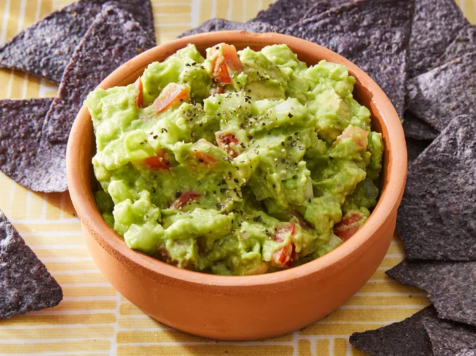

How to make Guacamole
Home

Description
This easy guacamole recipe is quick and simple to make. Great with tortilla chips or as a topping for Mexican foods! This quick and easy guacamole recipe is (almost) too good to be true.
Ingredients
- 2 ripe avocados, peeled and pitted
- 1 small onion, finely chopped
- 1 ripe tomato, chopped
- 1 clove garlic, minced
- 1 lime, juiced
- salt and pepper to taste
Steps
- Gather all ingredients.
- Mash avocado in a medium serving bowl.
- Stir in onion, tomato, and garlic.
- Season with lime juice and salt and pepper to taste.
- Cover and chill guacamole for 30 minutes to allow flavors to blend.